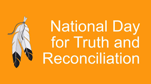
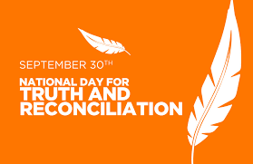
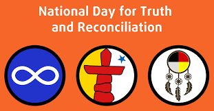
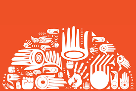

Reconciliation is necessary for a variety of reasons, and its importance is often highlighted in terms of identity and sovereignty concerns, which have been explored in class activities, media presentations, and discussions. Here are some key reasons why reconciliation is necessary and how it relates to identity and sovereignty concerns
Reconciliation means to me is a term used to describe the process of mending or restoring a relationship between parties that have been in conflict.
Cultural Preservation: Indigenous and marginalized communities often have rich cultural traditions, languages, and ways of life that have been threatened or eroded by colonial and oppressive policies. Reconciliation efforts can include measures to preserve and revitalize these cultural aspects, ensuring that future generations can reconnect with their heritage, maintain their distinct identities, and exercise their sovereignty over their own cultural practices.
Self-Determination: Sovereignty concerns are closely tied to self-determination. Reconciliation recognizes the right of Indigenous and marginalized groups to determine their own futures, make decisions about their lands, resources, and governance, and have control over their own destinies. It acknowledges that sovereignty should not be infringed upon and helps empower these communities to exercise self-determination.
